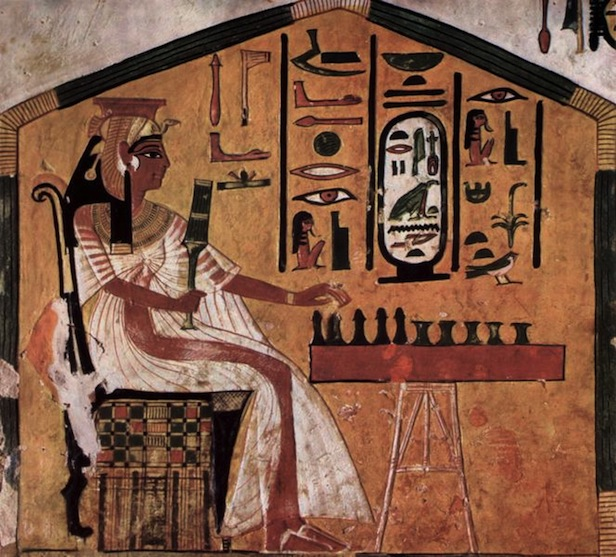
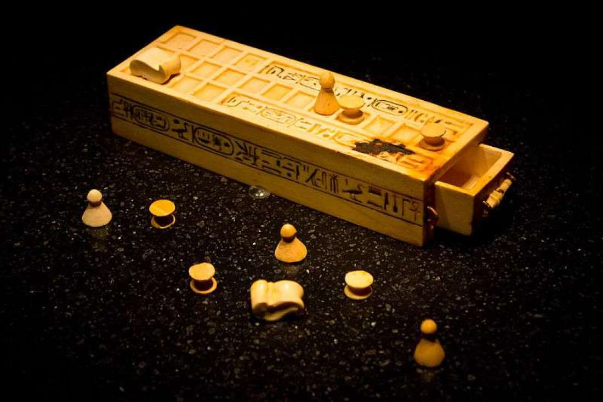
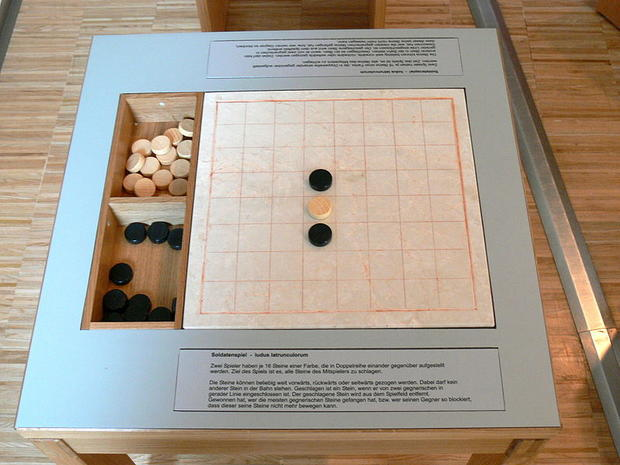
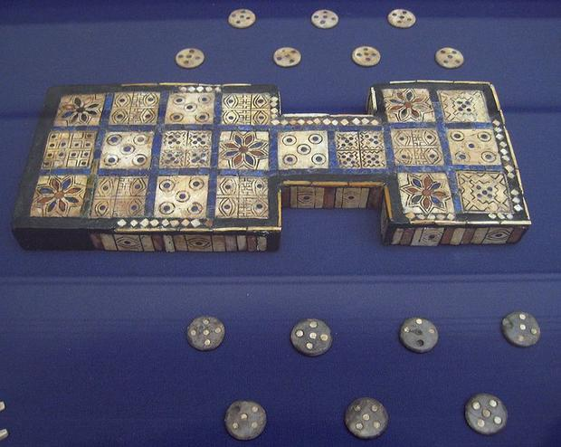
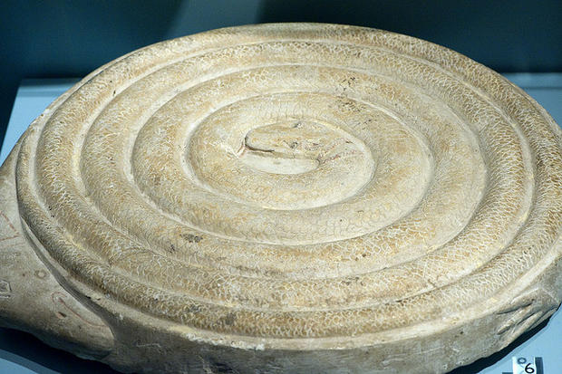
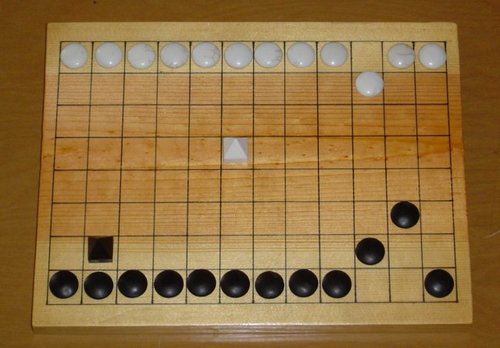

IDM1: Ludology and Game Play
Lecture 1 - Game Designer
John Jennings
Academic Year 2017-2018
Games through the Ages
Jung
One of the most difficult tasks people can perform, however much others may despise it, is the invention of good games. - C.G. Jung

Games

Senet

Hieroglyphs depicting Egyptian Senet players date all the way back to 3100 BCE. Even King Tut had a copy. It spent around three millennia lingering in his tomb before modern archaeologists got their hands on it.
Latrunculi (or “Mercenaries”)

One might call this Rome’s answer to chess: The elegant strategy game required armies of black and white pieces to duke it out across boards made with wood, marble, stone, or silver.
Ur

Ur (aka: “The Game of Twenty Squares”) has been around since at least 3000 BCE and took hold in ancient societies from Egypt to India.
Patolli
Throughout the Aztec empire, noble families and peasants alike were known to relish patolli. Participants threw dotted stones or beans to determine how their pieces would move over a cross-shaped board. Gambling was usually involved.
Mehen

Experts aren’t sure what the object of this ancient Egyptian game was, but, in any event, it involved a board shaped like a coiled snake. Marbles may have also been involved.
Petteia

Think checkers, except instead of eliminating an opponent’s piece by leaping over it, you’d sandwich it between two of yours. A staple in ancient Greece, Petteia parables proved irresistible to many great thinkers. Take, for instance, Aristotle, who claimed that “a citizen without a state may be compared to an isolated piece in a game of petteia.”
Go

Go likely originated in China between 2500 and 4000 years ago
Creating a good game
- Creating a good game is a challenging task
- requires a playful approach
- and a systematic solution
- Game Designers are
- Part engineer
- part entertainer
- part mathematician
- part social director
role of game designer
the role of the game designer is to craft a set of rules within which there are means and motivation to play.
- Whether it be folk games, board games, arcade games, or massively multiplayer online games
the art of game design has always been to create that elusive combination of challenge, competition, and interaction that players just call “fun.”
What Players Want
“But when I come to think more on it, the biggest reason it has become that popular is Mr. Tajiri, the main developer and creator of Pokemon, didn’t start this project with a business sense. In other words, he was not intending to make something that would become very popular. He just wanted to make something he wanted to play. There was no business sense included, only his love involved in the creation. Somehow, what he wanted to create for himself was appreciated by others in this country and is shared by people in other countries. … And that’s the point: not to make something sell, something very popular, but to love something, and make something that we creators can love. It’s the very core feeling we should have in making games.”
- Shigeru Miyamoto, talking about the creation of Pokemon
What is Game Design?
<h2>Video</h2>
<p>fd dga dggd</p>What Skills Does a Game Designer Need?
- Animation
- Anthropology
- Architecture
- Brainstorming
- Business
- Cinematography
- Communication
- Creative Writing
- Economics
- Engineering
- History
- Management
- Mathematics
- Music
- Psychology
- Public Speaking
- Sound Design
- Technical Writing
- Visual Arts